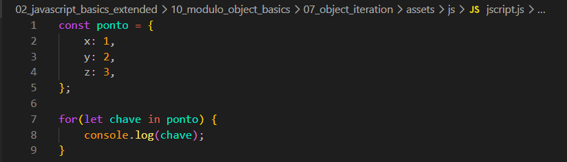
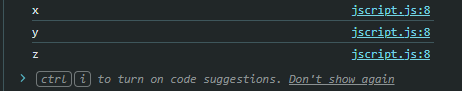
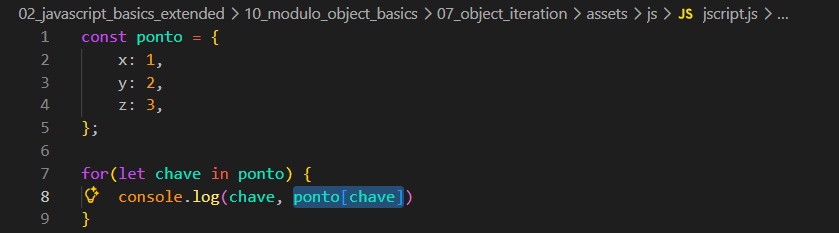
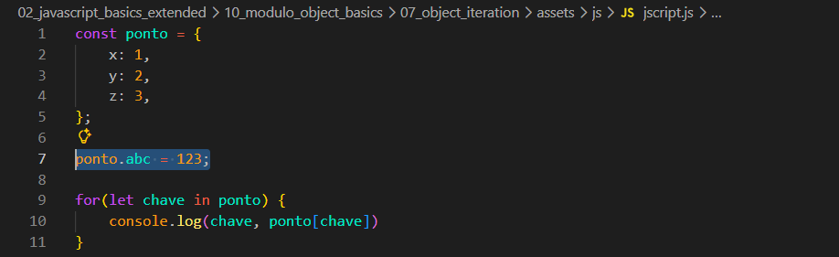
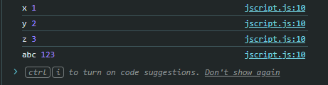
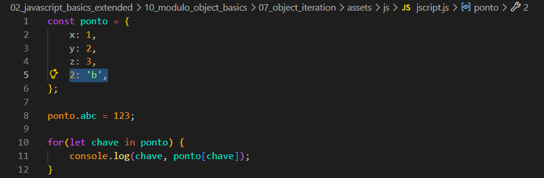
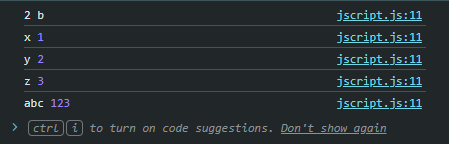

Object Iteration
Intro
Aqui iremos ver mais sobre objeto e com iteracao for.
Aqui iremos ver mais sobre objeto e com iteracao for.

Com isso, criamos um laco de repeticao 'in', para que consigamos percorrer cada uma das propriedades de nosso objeto.
Com isso teremos o seguinte resultado em nosso console do navegador:

Com isso se quisermos alem de imprimir no console de nosso navegador as chaves de nosso objeto e quisermos tambem imprimir seu valor.
Podemos fazer da seguinte forma:

Agora iremos supor que desejamos adicionar um novo valor em nosso objeto.
Podemos fazer da mesma forma que viemos anteriormente em uma das aulas passadas. Podemos fazer da seguinte forma: ponto.code = 123;, com isso ele seguira a linha de nosso codigo sendo acrescentado por ultimo como resultado.
Ficando da seguinte forma:


Agora se fizermos algo como adicionarmos diretamente em nosso objeto, como por exemplo:


Podemos observar que apesar de ter sido adicionada por ultimo em nosso objeto, ele acaba ficando em primerio.
O mesmo ocorreria se agora adicionarmos um 0: 'z' com isso o 0 ficaria em primeiro e o 2 em segundo.
Com isso podemos concluir que quando temos chaves como numeros iteiros. Eles sempre seram colocado no topo de nosso objeto, seguido pelas chaves que vieram.